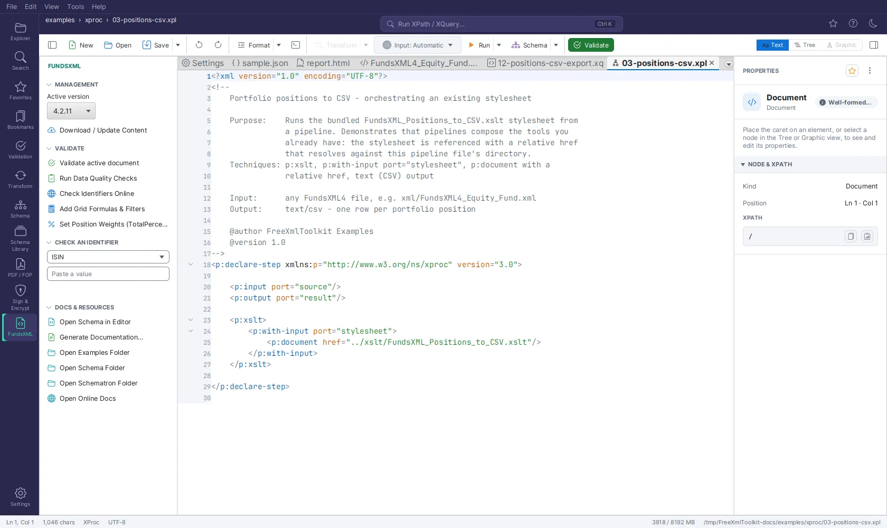
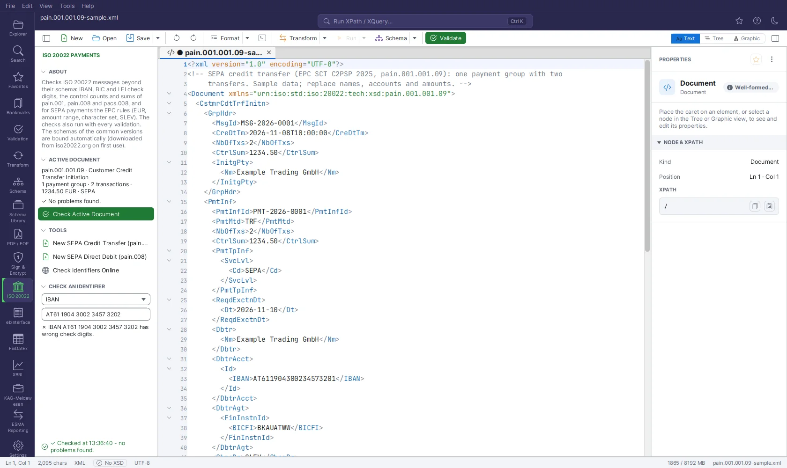
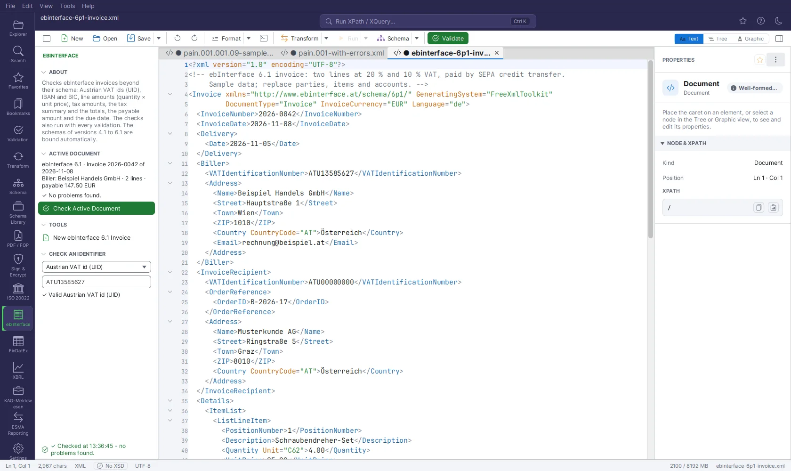

Speaks your standard
Optional extensions check documents against the rules of financial and public-sector standards, not just against their schema. Switch on the ones you need under Settings → Extensions.

FundsXML
Fund data in the FundsXML 4 format, with the schema bound automatically and checks that go beyond it.
- 54 data-quality checks with severity and an XPath for each
- Position weights, totals and identifiers checked against each other
- Grid view of positions, share classes and portfolios
- Welcome page and templates for new documents

ISO 20022 and SEPA
pain, pacs and camt messages in 19 versions, with control sums and the EPC SEPA rules.
- Schemas bound automatically
- Control sums and transaction counts recalculated
- IBAN, BIC and LEI check digits
- Sample SEPA credit transfer and direct debit

FinDatEx templates
EMT, EET, EPT and TPT files in versions 7 and 8, as CSV or Excel.
- Mandatory fields per template, version and CIC category
- Code lists, formats and ISIN / LEI check digits
- New template files and Excel import

XBRL
XBRL instances and inline XBRL reports, validated with your own installation of Arelle.
- Findings in the problem list with their line
- Arelle command line shown for reuse

ebInterface
Austrian XML e-invoices in versions 4.1 to 6.1.
- Line, tax and total calculations checked
- Austrian VAT ids (UID), IBAN and BIC
- Sample ebInterface 6.1 invoice

FMA reporting
Reports of Austrian pension funds and management companies to the Financial Market Authority.
- PK-Meldewesen: quarterly and annual pension fund reports with the FMA's rules
- KAG-Meldewesen: AIFMD files, money market fund report and derivative risk report (4. DeRiMV)
- Field number, name and rule of every element in the editor
- Check reports as HTML, grouped by rule

ESMA reporting
EMIR Refit trade reports, SFTR reports and MiFIR transaction reports with ESMA's validation rules.
- Mandatory, conditional and optional fields per action type
- Conditional rules and date orders from ESMA's rules text
- Check report grouped by rule and field
LEI and ISIN, checked online on request
Every LEI of a document can be looked up at GLEIF, every ISIN at ESMA FIRDS and OpenFIGI: lapsed or retired LEIs, ISINs without a trading venue, CFI codes and issuers that do not match. Values leave your computer only when you click or switch it on.
Online identifier lookupWrite an extension
Extensions are Java plugins: an activity with a side panel, menu items, validators that run with every check, schemas for the Schema Library and descriptions for the Inspector. A documented API and a sample project get you started.
Install and manage extensionsTry it with your own files
The extensions are part of every download. Switch them on in Settings → Extensions.